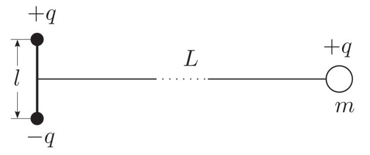

Y13 (2013) — English translation
There is a rigidly fixed electric dipole (two opposite, but identical in module point charges $+q$ and $-q$, located at a distance $l=2~\text{см}$ from each other). At a distance $L=2~\text{см}$ from the dipole on a line perpendicular to its axis (Fig. 3), a ball of mass $m$, charged with a charge $+q$, is located at equal distances from the dipole charges. The ball is released without a push ($v_0=0$), and it begins to move in the electric field of the dipole.

Source: https://pho.rs/p/3972